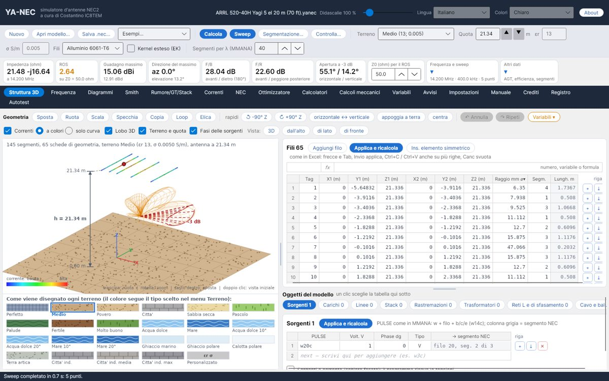

Programas gratuitos para radioamadores de Costantino Cerrotta IC8TEM (Capri, JN70CN): antenas, meteor scatter, EME, propagação pela camada E e controlo remoto do rádio. Para Windows, macOS, Linux e Raspberry Pi, em 35-37 idiomas, com atualização automática.
Todos gratuitos. Para outros sistemas (Windows 7, ARM, Raspberry Pi, .deb, .rpm…) use abaixo a pesquisa do ficheiro para o seu sistema.

YA-NEC
Yet Another NEC 1.7.2
Simulador de antenas NEC-2 para radioamadores: antenas filares, dipolos e armadilhas, direcionais HF, antenas de receção, Yagi VHF/UHF, agrupamentos e G/T, otimizador, terreno real. Abre ficheiros NEC2, MMANA, AutoEZ/MultiNEC e EZNEC. Curso em vídeo com 32 lições.
Meteor scatter de 50 a 432 MHz: previsão e eficiência em direto das chuvas de meteoros no seu percurso, que chuva funciona agora, melhores apontamentos (Hot A / Hot B), geometria e perdas do percurso, dados em direto dos radares de meteoros, spots MS do PSKReporter, mapa de quadrículas, documentos técnicos.
Para preparar os contactos EME: posição da Lua a partir do seu locator e janelas comuns com o correspondente, Doppler e correção de frequência, degradação (DGRD), orçamento da ligação para Yagi e parabólicas, ruído do céu e do Sol. «O meu horizonte»: o perfil real do terreno a partir de dados de altitude, com o percurso da Lua e as horas exatas em que nasce e se põe atrás dos seus obstáculos. Em 37 idiomas.
Esporádica E (também multissalto e intercontinental), FAI, meteor scatter (com o YA-MS integrado) e aurora rádio; ionossondas GIRO em direto e nuvens Es ao longo do tempo. Em 35 idiomas, atualiza-se sozinho.
Controlo remoto do seu rádio HF pela internet: áudio bidirecional cifrado AES-256, CAT com Hamlib ou TCI, PTT, manipulador e descodificador CW, modos digitais no cliente, acesso também pelo navegador do telemóvel. Um só programa para os dois PC: servidor (junto ao rádio) e cliente (o operador).
Propagação troposférica VHF/UHF ao vivo a partir de 144 MHz: mapas de previsão de Hepburn e F5LEN, spots ao vivo de DX clusters, RBN, PSKReporter e das tuas próprias descodificações WSJT-X/JTDX/MSHV, previsão própria com balanço de ligação entre duas estações (terreno, difração, troposcatter, condutas, ruído, modos digitais). Também para Windows 7.
As últimas notícias, as mesmas do grupo e da Página do Facebook.
📻 IP-TRX-CTRL 0.3.8
IP-TRX-CTRL 0.3.8, pela segurança: a ligação aos brokers MQTT é cifrada com TLS e certificado verificado (com regresso à porta 1883 nas redes ou PC antigos que não o conseguem); entre dois programas 0.3.8 cada sessão tem chaves efémeras (sigilo futuro); um limite em todas as tentativas de código (emparelhamento e página web) trava quem tente adivinhá-lo.
YA-NEC 1.7.1 e 1.7.2: na Estrutura 3D as cotas (h, Δ e cotas dos níveis) clicam-se e alteram-se; nos Diagramas o espaçamento de um stack de antenas iguais muda em direto, com o lóbulo inicial tracejado. Segurança: a atualização automática instala só pacotes assinados pelo YA-NEC e ficheiros preparados de propósito já não fecham o programa. Aula 37 do curso em vídeo, em italiano e inglês.
O YAEC 1.9.8, a calculadora EME, já está disponível. No separador O meu horizonte a Lua é desenhada no seu tamanho real (cerca de 0,5°), com um círculo tracejado para a encontrar logo. A atualização automática só acontece com a impressão digital SHA-256 do pacote verificada; as ligações do programa só abrem endereços web e de correio eletrónico; no macOS o lançador verifica o Mono, o Rosetta e a quarentena e explica os erros 126 e 127. Quem já tem o YAEC recebe a atualização ao arrancar.
Saiu o YA-NEC 1.7, o simulador de antenas NEC-2. Novas calculadoras a partir da RadioRivista, RadioKit, QST e do ARRL Handbook: Yagi HF de 2-3 elementos com guia de ajuste, Yagi bibanda entrelaçada, vertical multibanda com traps, L invertido / T para 160 m, half-sloper na torre, dipolo de banda larga, dipolo multibanda com relés, carga linear, fio ressonante em harmônicos (EFLW), gamma match e casamento por stub na carta de Smith. Quad multibanda, loop magnético retangular, espaçamento do stack escolhido com um clique, nova aba Dicas. Três novas aulas (34-36) no curso em vídeo, em italiano e inglês.
YA-MS 1.8.26 (desde a 1.8.23): refração troposférica opcional a partir do modelo GFS; Japão com as contagens HRO do IPRMO e de Ogaki; ganho Yagi a partir da média VE7BQH; a Terra é o elipsoide WGS84 com distâncias e azimutes de Karney; o programa abre-se uma só vez; CALL3: o MMMonVHF agora pede acesso ao site, o YA-MS explica-o e permite carregar o ficheiro com «Importar CALL3.TXT...».
E-LAYER ANALYZER 0.6 (até à 0.6.6): cadeias multi-salto em 50 MHz com saltos curtos nas extremidades, novo separador TABELA DE SALTOS exportável para Word (quantos saltos são precisos de 500 a 12000 km), duplo salto igual até cerca de 4700 km (confirmado pelos QSO da 5U5K), verificação dos alertas no BENCHMARK 50 MHz, altura da Es a partir das ionossondas GIRO, precursores em 24 e 28 MHz, alerta F.A.I. e alerta de 144 MHz a partir do APRS, previsão do TEP. A Terra é agora o elipsoide WGS84 com as distâncias de Karney, e o campo IGRF está corrigido (os desvios F.A.I. e de aurora estavam deslocados cerca de 0,3° até à 0.6.5: correção declarada). Novas fontes, nas 35 línguas.
Saiu a 0.3.7 do IP-TRX-CTRL, o controle remoto do seu rádio pela internet. Novidades: redução de ruído neural HamNoise para fonia e CW; VOX com um botão ao lado do PTT; notas entre quem opera e quem escuta, também pelo navegador; os ouvintes ouvem também quem transmite (útil para as rodadas); squelch de voz; gravação dos QSOs em WAV; ligação IPv6 direta com abertura das portas por PCP, que passa também o CGNAT; servidor sem janela para um Raspberry Pi sem ecrã; emulação WinKeyer para N1MM, DXLog e QLog. Desde a 0.3.6: áudio Opus, vários ouvintes no mesmo servidor, manipulador CW USB e MIDI (VBand, Vail), registo de QSOs para GridTracker, JTAlert e Log4OM com exportação ADIF para o LoTW, rádios Icom em rede sem um PC ao lado. Licença GNU AGPL 3.0.
Saiu o IP-DESK-CTRL 0.5.32, o meu ambiente de trabalho remoto: com o zoom em «Ajustar», o PC remoto só envia os píxeis que a janela consegue mostrar (menos largura de banda, mesmo resultado); nova qualidade «Rede local (baixa latência)» até 60 imagens por segundo, e «Automática» passa sozinha a 50 quando o ping fica abaixo de 12 ms; com a codificação pela placa gráfica fica prudente em 30 imagens por segundo e 12 Mbit/s.
Saiu a 1.3.5: o troposcatter do NBS TN101 junta-se como quarto modelo de comparação; o clima rádio do TN101 é escolhido para cada percurso a partir dos dados ERA5 do local, por isso vale no mundo inteiro, com a variabilidade em 10% e 1% do tempo; modos digitais FT4, FT8 e Q65-15C/30B/60A; pré-amplificador na antena fixo. Videoaula sobre a previsão refeita com a 1.3.5, em italiano e em inglês.
Saiu o LIVETROPOVHF, o meu programa para a propagação troposférica em VHF/UHF, com duas videoaulas em italiano e em inglês: a base de indicativos CALL3 e como usar a previsão, com o novo painel «Detalhes a mostrar».
Saiu a 1.5.8: na ficha Antenas de fio o botão «Ábaco ›» abre tabelas de comprimentos e contrapesos calculadas pelo NEC (EFHW 49:1 e 64:1, com e sem contrapeso, 9:1); o Otimizador tem a máscara VHF ROE + G/T, que melhora o G/T de um stack 2 x 2 a 30 graus como VE7BQH; novo capítulo 16 do manual de cálculo e lição 32 do videocurso.
Saiu a 1.5.7: na ficha Antenas de fio a bobina de carga é opcional e «Ajustar a bobina (NEC)» procura a indutância certa; os avisos de todas as calculadoras agora são traduzidos e a estrutura 3D já não desenha o isolante do fio como bobinas.
Saiu a 1.5.6: as calculadoras HF têm a nova ficha Antenas de fio para antenas alimentadas na ponta (EFHW 49:1 e 64:1, com bobina, fio não ressonante 9:1 e 4:1), com seis disposições do fio, contrapeso, ROE por banda e ajuste do comprimento com o NEC. Botões abrem já preenchidas as fichas do balun, do choke e do quarto de onda; a Discone passa para VHF.
Saiu a 1.5.5: a calculadora da HEN indica polarização horizontal, como a verificação NEC, e a página Medidas VNA está traduzida (títulos, legenda e proposta de correção). O videocurso tem agora 32 lições.
☄️ YA-MS – Geminídeas 2026 no Japão, na Austrália e na América do Sul
Seis vídeos de cerca de 2 minutos com a previsão em 144 MHz para 14 de dezembro de 2026 em três percursos de 1400-1700 km: Sapporo (JA8) → Fukuoka, melhor hora 09-10 UTC; Brisbane → Melbourne, 12-14 UTC; São Paulo → Buenos Aires, 01-02 UTC. Em inglês e na língua local. Apenas cálculo: a previsão por radar do YA-MS usa Collm (Alemanha) e lá não é válida.
Videocurso do YA-NEC: duas lições novas. A 30, «Cabos e medidas com o VNA», calcula as perdas dos cabos e o casamento de quarto de onda e compara o cálculo NEC com uma medida .s1p; a 31, «Outras calculadoras», mostra Loop Skywire, laço retangular, HEN, Big Wheel, biquad e antenas em PCB. O curso tem agora 32 lições, em italiano e inglês.
Saiu a 1.5.4: um modelo escrito à mão sem fonte dá agora um aviso na barra de estado em vez de uma janela, as janelas de erro fecham com Enter ou Esc, a página da correção do boom está traduzida para inglês. O videocurso está completo: 30 lições gravadas com a 1.5.3-1.5.4.
As 30 lições do videocurso do YA-NEC foram gravadas de novo com a versão 1.5.3, em italiano e inglês, com os valores da versão atual. Nova a lição 29, Redimensionar e recentrar: a Yagi de 11 elementos de I4GBZ tirada do MMANA passa de ROE 7,4 para 1,07 com um clique.
Novidades: Variáveis e otimização › Redimensionar e recentrar (um modelo MMANA ou um projeto levado à frequência desejada com um clique, com diâmetros em escala, iguais ou comerciais; o retoque do radiador anula a reatância); Lóbulos e Parâmetros nos Diagramas; passo dos ângulos adaptado ao computador; Receção (RDF) sobre o modelo aberto. Corrigidos a quad de 2-3 elementos em Automático (agora levada à ressonância pelo NEC) e a janela dupla num modelo sem fonte. Curso em vídeo regravado com a 1.5.3, em italiano e inglês. Quem já tem o YA-NEC recebe-o sozinho com a atualização automática.
Todos os programas num só lugar, com as novidades, os cursos em vídeo e os vídeos, a pesquisa do ficheiro certo para cada sistema e a descrição completa de cada programa, em 10 idiomas.
☄️ YA-MS – meteor scatter RA1WU ↔ IW2EQR no pico das Gemínidas
Vídeo de demonstração (1:30): a previsão em 144 MHz entre IW2EQR (JN45NM) e RA1WU (KO47ES), 1890 km, para 14 de dezembro de 2026, dia do máximo das Gemínidas (IMO: 14:00 UTC, ZHR 150). Mostra o calendário das chuvas, o Cálculo de previsão com os Hot A/B e o apontamento recomendado (27° em vez de 37°), a eficiência hora a hora (melhor janela 16–17 UTC no lado A) e a geometria com a atenuação do percurso.
Lições 0, 1, 13, 15, 22 e 27 gravadas de novo com a 1.5.2, e nova lição 28: o levantamento de uma antena construída e a correção do boom ao contrário. Exemplo: a 10 elementos de IC8TEM em boom redondo de 30 mm, calculada tal como está, ressoa em 145,97 MHz; com Calculadoras › VHF › Correção do boom no sentido «levantamento → modelo elétrico para o NEC» volta a 144,33 MHz, ROE 1,15, 15,7 dBi. 29 lições no total, por ordem no YouTube.
Novidades: separadores reorganizados (de 16 para 13: Smith nos Diagramas, NEC/correntes, Variáveis e otimização); linhas, cargas e redes desenhadas nos fios da Estrutura 3D; legenda do terreno no botão Mostrar terreno; bandas de radioamador no fundo dos gráficos de frequência; Terreno real com o estado do cálculo e a altitude do local à mão; Otimizador com Medidas ao milímetro (diâmetros comerciais, verificação NEC, lista de corte); diagramas, gráficos e quadros traduzidos em 36 idiomas. Quem já tem o YA-NEC recebe-o sozinho pela atualização automática.
🖥️ Todos os meus programas, para todos os sistemas
E-LAYER ANALYZER, YA-MS, YAEC, YA-NEC, IP-TRX-CTRL e os que vierem saem para todos os sistemas possíveis, com instalador e uma versão portátil que se usa sem instalar. Sistemas suportados
Encontre o ficheiro para o seu sistema
Escolha o seu sistema: aparecem os ficheiros certos de cada programa, com a ligação direta. Por baixo está a tabela completa de todas as distribuições, com pesquisa.
«Atualiza-se sozinho»: com o instalador, a versão portátil, a app do Mac e o AppImage o programa atualiza-se sozinho; com os pacotes .deb, .rpm, Arch e Slackware avisa e atualiza-se instalando o pacote novo.
Todas as distribuições
Programa
Sistema
Tipo
Atualiza-se sozinho
Ficheiro
Para todos os sistemas
Instalador e versão portátil que se usa sem instalar.
Windows 10/11 de 64 e 32 bits, Windows em ARM (PC Snapdragon) e também Windows 7 SP1, 8 e 8.1
macOS Apple Silicon (M1-M4) e Intel
Linux Debian, Ubuntu, Mint (.deb), Fedora e openSUSE (.rpm), Arch e Manjaro, Slackware, Alpine, AppImage para qualquer distribuição
Raspberry Pi Raspberry Pi OS de 64 e 32 bits e as outras placas ARM
FreeBSD Em versão experimental (E-LAYER ANALYZER e YAEC)
Os programas baseados em .NET não existem para Linux de 32 bits em PC (i686) nem OpenBSD, porque o .NET não existe para esses sistemas; o YAEC, que também corre com Mono, tem ainda pacotes para Linux i686 e OpenBSD (ainda não testados). Com o instalador do Windows, a app do Mac, as versões portáteis e o AppImage o programa depois atualiza-se sozinho.
Vídeos
Cursos em vídeo, apresentações e demonstrações no canal do YouTube.
Novidades, capturas de ecrã, guias, perguntas, relatos de erros e resultados no ar: escreva-me no grupo ou na Página. Se algo não funcionar no seu sistema, diga-me!